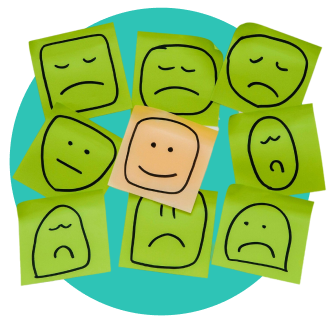
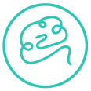

Sobre nós
A Clínica ZACK – Desenvolvimento Humano e Organizacional foi concebida a partir da larga
experiência de seu
fundador, o Psicólogo Clínico e Organizacional Pedro Paulo Záu Vieira, que atua há mais de 10 anos na área
de saúde mental e com mais de 10 mil atendimentos clínicos na área de desenvolvimento dos comportamentos e
posturas de pessoas, profissionais e empresas.
Cada vez mais a sociedade se vê impelida à necessidade de refletir sobre seus
pensamentos, sentimentos e comportamentos na tentativa de ressignificar propósitos, crenças e valores a
fim de buscar mais eficácia e eficiência em seus relacionamentos intra e inter pessoais, profissionais,
organizacionais e institucionais.

A Clínica ZACK oferece um amplo portfólio de serviços, ferramentas, testes, técnicas e
metodologias científicas e aprovadas pelos órgãos regulatórios competentes.
Além disso, o seu fundador acompanhando uma tendência global de sistema de trabalho e parceira, trouxe
para a equipe da Clínica ZACK, profissionais de diversas áreas, que atuam em todas as dimensões da saúde
mental. Tais profissionais possuem em seus currículos não apenas a competência técnica, mas sobretudo a
experiência prática de empatia e humanização no atendimento psicológico.
Diante disso, teremos o maior prazer em conhecer a sua necessidade, seja ela a nível
pessoal, profissional ou organizacional propondo um Plano de Ação focado em alternativas de soluções para o
efetivo apoio ao seu REAL DESENVOLVIMENTO.
Nossos propósitos
Promover o autocuidado em saúde mental
Facilitar o encontro entre clientes e psicólogos
Promover capacitações, pós graduação, cursos, ferramentas, supervisão para os psicólogos
Democratizar o acesso à saúde mental a partir de serviços com preço justo
Aumentar o alcance de clientes
Formar uma comunidade
Nossa Missão
Facilitar o acesso a serviços de saúde mental, conectando pacientes com
profissionais de psicologia
através de uma plataforma segura, acessível e acolhedora.
Nossos Valores
Empatia
Confidencialidade
Integridade
Inovação
Acessibilidade

Nossa Missão
Facilitar o acesso a serviços de saúde mental, conectando pacientes com
profissionais de psicologia
através de uma plataforma segura, acessível e acolhedora.